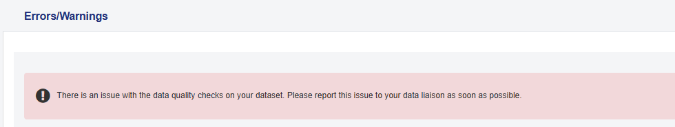

LSA Issues
The LSA module is now open for Official LSA File submissions. While the submission period is open, we use this space to provide general information about known issues with the LSA module in the HDX. Please check back regularly to remain up to date on the status of all bugs and flag issues we are actively addressing.Troubleshooting
- If you notice some aspect of the LSA module is not working as expected, we recommend logging out and back in again. This is often the best first step to make sure something is really not working as expected. To log out, hover over your name in the top right corner and select the Logout option. Exiting the webpage without logging out using this button is not enough. If you've tried everything above and you still notice an issue, please submit an AAQ.
- If a red banner appears on the Flag Report page after you upload a file, wait a couple of minutes, then try uploading the file again by clicking the "Replace Upload" button on the Flag Report page. The image below shows an example of this red banner. Temporary network issues sometimes cause these banners, and uploading the file again may resolve the issue. If the red banner continues to appear, contact your dedicated reviewer through your AHAR Regional inbox.

Available Guidance
- The LSA Submission Guide, Common Flags Library and Guidance on Common Data Quality Issues can be downloaded from the HDX homepage.
Current Outstanding Issues
Resolved Issues